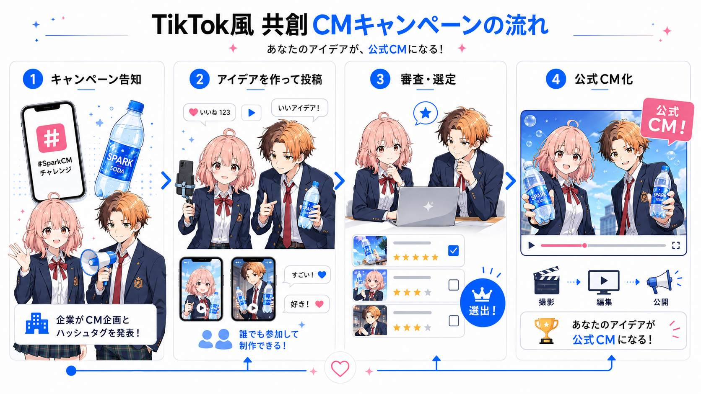
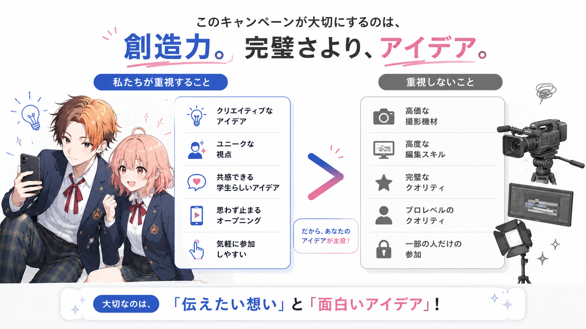
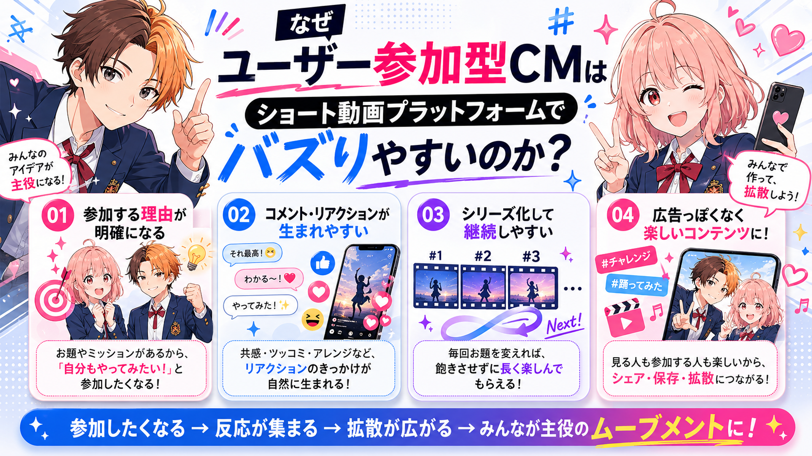
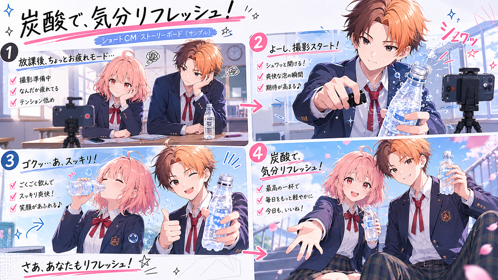

ユーザー発のCM案を、企業が公式CM化する。
企業が自社商品のCM案をTikTok上で募集し、ユーザーは指定ハッシュタグを付けて短尺CM案を投稿する。 企業は発想が良い投稿を選び、必要な修正を加えたうえで実際のCMとして起用する企画。
企画名案
企画名は、企業側のお題感とユーザー側の参加感が伝わるものが向いている。 もっとも使いやすい案は「#わたしならこう売る」。
企画の目的
この企画の目的は、企業が一方的に広告を流すのではなく、TikTokユーザーの発想を使って 若者に届きやすいCM表現を集めること。
10代・20代は広告らしい広告を飛ばしやすい一方で、同世代の投稿やネタ、共感できる表現には反応しやすい。 そのため、商品説明ではなく「ユーザーならどう見せるか」を集める形にする。
基本の仕組み
企業の「お題」から公式CM化まで、4つのステップで進む。

対象商品
商品は、視聴者が日常で見たことがあり、すぐに買えるものが向いている。 高額商品や説明が難しい商品より、炭酸飲料・お菓子・コンビニ商品などの方が参加しやすい。
向いている商品
- 炭酸飲料
- コンビニスイーツ
- お菓子
- アイス
- エナジードリンク
- 文房具
- リップクリームなどの日用品
理由
- ユーザーが入手しやすい
- 撮影のハードルが低い
- 味・気分・シーンで表現しやすい
- 10代・20代の日常とつながりやすい
- コメントで共感が生まれやすい
完成度より、発想を見る。
「映像制作が上手い人を選ぶ」のではなく、「企業だけでは出にくい発想を拾う」ことが重要。 だから採用基準はガチガチにしすぎない。

重視すること
- 商品の見せ方が面白い
- 若者目線の切り口がある
- 冒頭でスクロールを止められる
- コメントしたくなる要素がある
- 公式CMに発展できる余地がある
重視しすぎないこと
- 撮影機材の良さ
- 編集技術の高さ
- プロっぽい完成度
- フォロワー数
- 企業CMとしての完成形になっているか
採用基準の言い方は「完成度より、発想を見ます」が分かりやすい。 これにより、動画制作初心者でも参加しやすくなる。
TikTokで流行りやすい理由
参加動機・コメント文化・拡散性が噛み合い、自然に広がりやすい。

1. 参加する理由がある
自分の案が企業CMになる可能性があるため、ただの投稿キャンペーンより参加動機が強い。
2. コメントが生まれやすい
「この案好き」「自分ならこうする」「これ公式化してほしい」など、視聴者が反応しやすい。
3. シリーズ化できる
募集、お題発表、投稿紹介、採用発表、公式CM公開まで、複数回の投稿に展開できる。
4. 広告感を弱められる
企業が作った広告ではなく、ユーザー発のアイデアとして見せられるため、自然に受け取られやすい。
投稿ルール案
- 対象商品を使った15秒前後のCM案を投稿する
- 指定ハッシュタグを付ける
- 完成CM風、絵コンテ紹介、ナレーション案、使い方提案など形式は自由
- 他人の映り込み、無断使用の音源、危険な撮影は避ける
- 採用作品は企業が一部修正・再編集する可能性がある
絵コンテ案の扱い
コメント欄に絵コンテ画像を貼る案は面白いが、全員が同じように使える前提にしない方が安全。 メインの方法は、動画内に絵コンテを入れる形が安定する。
おすすめ構成
- 前半：完成CMっぽい映像を見せる
- 後半：4コマ絵コンテで構成を説明する
- 固定コメント：企画意図やキャッチコピーを書く
メリット
- 動画だけで内容が伝わる
- 制作途中の案でも投稿しやすい
- 企業が採用後に修正しやすい
- アイデア重視の企画と相性が良い
企業側の投稿展開
炭酸飲料の場合
お題から採用理由まで、実際の流れを15秒CMの絵コンテ例で見てみる。

お題投稿
「この炭酸飲料、あなたならどう売る？ 15秒CM案を募集。完成度より発想重視。 #わたしならこう売る を付けて投稿してください。」
ユーザー投稿例
テーマ：放課後、疲れた気分を一気に切り替える炭酸飲料CM。
机に突っ伏す学生。テロップ「今日、もう無理。」
炭酸飲料を開ける。開栓音を強調。
一口飲んだ瞬間、画面が明るく切り替わる。
コピー「がんばる前に、気分を戻す炭酸。」
採用理由の例
- 商品の機能説明ではなく、若者の日常シーンに置き換えられている
- 開栓音や画面切り替えなど、TikTokで見せやすい演出がある
- 企業側で公式CMとして再編集しやすい
注意点
実際に企業CMとして採用する場合は、投稿者の許可、出演者の許可、音源の使用可否、二次利用の範囲を事前に整理する必要がある。 企画書では、採用時に企業が修正・再編集できることを明記しておくと安全。
また、ユーザーが参加しやすいように、募集時の言い方は堅くしすぎない方が良い。 「プロっぽさより、発想を見ます」「スマホ撮影でOK」と明記すると参加のハードルが下がる。
まとめ
この企画は、企業が自社商品のTikTok向けCM案を、指定ハッシュタグを通じてユーザーから募集する共創型広告企画である。 商品は炭酸飲料などの身近で手に入りやすいものにし、ユーザーは15秒前後のCM案を自由に投稿する。
採用基準は完成度より発想を重視し、企業は良い案を選んで必要な修正を加え、公式CMとして起用する。 TikTokの参加文化、コメント文化、短尺動画の拡散性を活かせる点が、この企画の強みである。